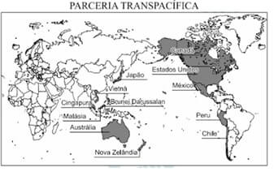
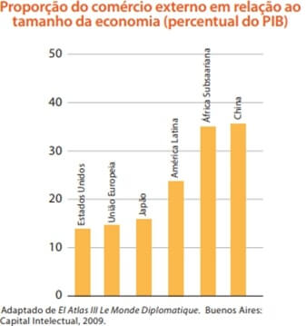
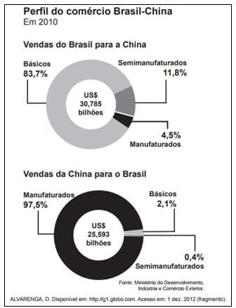

Conteúdo: : Blocos comerciais; Organização Mundial do Comércio; Balança Comercial;
Objetivo: Relacionar as mudanças no comércio internacional no atual período da globalização.
Questão 01
(2020) Em relação à formação de blocos comerciais no atual período da globalização, assinale a alternativa que correlaciona o tipo de associação com sua definição:
1. Áreas de livre comércio.
2. Mercados comuns.
3. Agrupamentos comerciais.
() São associações que buscam colocar em comum todos os recursos econômicos eliminam as barreiras entre os membros, estabelecem barreiras exteriores e desenvolvem programas internos de cooperação econômica e financeira. São exemplos a União Europeia (UE) e o Mercado Comum do Sul (Mercosul).
() São associações que eliminam barreiras entre os membros, porém não existe maior cooperação económica. Um exemplo é o Nafta (TLC), que agrupa o Canadá, os Estados Unidos e o México.
() São associações econômicas para o comércio de um produto. E o caso da Organização dos Países Exportadores de Petróleo (Opep), que agrupa os principais paises produtores de petróleo, entre os cinco países originais: Arábia Saudita, Irã, Iraque, Kuwait e Venezuela.
a) 1-2-3.
b) 3-2-1.
c) 2-1-3.
d) 2-3-1.
Comentário:
Colocar os comentários aqui.
Questão 02
(FMJ 2018) Com o advento da globalização, o comércio mundial estabeleceu o chamado capital especulativo, que é caracterizado.
a) pela obtenção de lucro com a comercialização de moedas e a flutuação de seu valor.
b) pela concessão de empréstimos que assegurem a estabilidade e o avanço do comércio.
c) pelo investimento aplicado em unidades produtivas e na compra de equipamentos.
d) pela adoção de tarifas alfandegárias para regular e equalizar os mercados.
e) pelo poder aquisitivo calculado a longo prazo perante crises e avanços econômicos.
Questão 03
(ENEM 2017) O comércio soube extrair um bom proveito da interatividade própria do meio tecnológico. A possibilidade de se obter um alto desenho do perfil de interesses do usuário, que deverá levar às últimas consequências o princípio da oferta como isca para o desejo consumista, foi o principal deles.
SANTAELLA, L. Culturas e artes do pós-humano: da cultura das minhas à cibercultura. São Paulo; Paulus, 2003 (adaptado).
Do ponto de vista comercial, o avanço das novas tecnologias, indicado no texto, está associado à:
a) atuação dos consumidores como fiscalizadores da produção
b) exigência de consumidores conscientes de seus direitos.
c) relação direta entre fabricantes e consumidores.
d) individualização das mensagens publicitárias.
e) manutenção das preferências de consumo.
A interatividade tecnológica permite ao comércio antecipar-se às demandas do mercado adequado as mensagens publicitárias às aspirações do mercado consumidor. Portanto a tecnologia a serviço dos agentes do mercado viabilizam praticamente a personalização ou individualização das mensagens publicitárias.
a) Incorreta. Não é possível inferir a partir do texto que o avanço da tecnologia estaria associado a atuação dos consumidores como fiscalizadores da produção. Fato é que apesar de alguns mecanismos criados com desenvolvimento da tecnologia permitirem que tenhamos acesso às informações acerca do que acontece nas etapas de produção (exploração da mão de obra e degradação ambiental), os consumidores não possuem ferramentas para fiscalizar diretamente a produção, papel praticamente restrito às instâncias governamentais.
b) Incorreta. É de fundamental importância que os consumidores tenham conhecimento dos seus direitos, porém, o avanço da tecnologia não está associado a exigência de consumidores conscientes.
c) Incorreta. A tecnologia criou um grande distanciamento entre consumidores e fabricantes. O desenvolvimento dos meios de transporte e das telecomunicações permitiu a flexibilização da produção industrial, deste modo as fábricas encontram-se espalhadas pelo mundo, mantendo suas sedes em países desenvolvidos e implantando filiais nos países periféricos.
d) Correta. O texto, apesar de ser de 2003, é certeiro em afirmar que o mercado se valeria da tecnologia para garantir a oferta como isca para o desejo consumista. Cada vez mais, sites, redes sociais, aplicativos e outros meios tecnológicos se apropriam de dados dos usuários para oferecer produtos específicos para cada pessoa, aumentando assim o desejo consumista dos consumidores e os lucros das corporações.
e) Incorreta. Não há no texto nada que permita concluir que o desenvolvimento tecnológico estaria associado a manutenção das preferências de consumo. Na sociedade pós-fordista, os produtos passam por transformações rápidas, seja pelo desenvolvimento de um produto mais avançado ou ainda como forma de estratégia do mercado (obsolescência programada) para fazer com que se consuma exageradamente.
Questão 04
(ENEM 2016)

Disponível em: http://portuguese.brazil.usembassy.gov. Acesso em: 11 maio 2016 (adaptado).
Dentro das atuais redes produtivas, o referido bloco apresenta composição estratégica por se tratar de um conjunto de países com:
a) elevado padrão social.
b) sistema monetário integrado.
c) alto desenvolvimento tecnológico.
d) identidades culturais semelhantes.
e) vantagens locacionais complementare.
Os países apresentados no mapa se distribuem pela chamada “Bacia do Pacífico”, região que nas últimas décadas ganhou protagonismo como aquela que representará uma das maiores redes comerciais do mundo. Eles dispõem de infraestrutura, que inclui transportes, comunicações, abasteci mento e centros comerciais; esses países receberão as em bar cações com toda a produção envolvida nos acordos comerciais, entre eles, a Parceria Transpacífica.
a) Incorreta. Alguns países integrantes do acordo possuem problemas relacionados à desigualdade social e ao atendimento em serviços básicos (saúde, educação, alimentação) para parte da população, como é o caso de Peru, México e Malásia, o que compromete a qualidade de vida de seus habitantes.
b) Incorreta. O bloco não pretende a integração monetária, algo praticado atualmente apenas pela União Europeia com o Euro. Há antes uma pretensão do crescimento comercial a partir da diversidade econômica dos membros.
c) Incorreta. A produção de científica e tecnológica entre os países destacados é concentrada nos Estados Unidos e no Japão, sendo pouco relevante nos países latino-americanos e do Sudeste Asiático.
d) Incorreta. A diversidade cultural é bem marcante entre os países- membros e pode ser evidenciada nos costumes alimentares, nas diferentes crenças e na própria história que particulariza cada um deles.
e) Correta. As vantagens locacionais em questão são evidenciadas nos aspectos complementares das economias envolvidas no acordo, como mão-de-obra barata e incentivos fiscais promovidos pelos países do Sudeste Asiático para fomentar a produção de manufaturados; investimentos na produção e exportação de commodities agrícolas e minerais, exemplificados nos casos de México, Austrália, Nova Zelândia, Peru, Chile e EUA; e grande produção de produtos de alta tecnologia no Japão e nos EUA, além da centralidade financeira destes no mercado global.
Questão 05
(PUC-RS 2015) A divisão do mundo em Estados nacionais, com fronteiras, moedas e alfândegas, cria barreiras à livre circulação de mercadorias, serviços, capitais e pessoas. A criação de blocos econômicos é uma tentativa de reduzir essas barreiras em escala regional, mas também uma forma de os países membros se fortalecerem frente ao processo de globalização. Nesse processo, NÃO constitui uma forma de organização de blocos econômicos a
a) união aduaneira.
b) união econômica e monetária.
c) criação de zonas de livre comércio.
d) eliminação das fronteiras físicas.
e) organização de mercados comuns
Questão 06
(USS 2015)

As exportações e importações de mercadorias podem assumir grande relevância na geração de riqueza nacional. De acordo com o gráfico, constata-se uma diferença na importância do comércio externo para países desenvolvidos e subdesenvolvidos.
Essa diferença se deve à desigualdade entre esses dois grupos de países em relação a:
a) renda média do mercado nacional.
b) qualidade técnica do sistema viário.
c) padrão tecnológico da indústria extrativa.
d) crescimento vegetativo da população absoluta.
Questão 07
(UNESP 2014) “Presenciamos um imperativo das exportações, presente no discurso e nas políticas do Estado e na lógica das empresas, que tem promovido uma verdadeira commoditização da economia e do território. A lógica das commodities não se caracteriza apenas por uma invenção econômico-financeira, entendida como um produto primário ou semielaborado, padronizado mundialmente, cujo preço é cotado nos mercados internacionais, em bolsas de mercadorias. Trata-se também de uma expressão política e geográfica, que resulta na exacerbação de especializações regionais produtivas”.
(Samuel Frederico. Revista Geografia, 2012. Adaptado.)
Entre as implicações políticas e econômicas do processo de “commoditização do território”, é correto indicar:
a) a menor autonomia dos produtores locais e a maior vulnerabilidade das regiões em relação às demandas e às regulações impostas pelo mercado externo.
b) o fortalecimento dos produtores locais e a menor vulnerabilidade das regiões em relação às crises e às oscilações do mercado externo.
c) a maior autonomia dos produtores locais e o fortalecimento das regiões em função do atendimento prioritário das demandas do mercado interno
d) a menor autonomia dos produtores locais e a instabilidade das regiões em função do atendimento prioritário das demandas do mercado interno.
e) o maior controle pelos produtores locais e a maior autonomia das regiões em relação à definição dos preços internacionais das commodities.
Questão 08
(ENEM 2014)

Nas últimas décadas, tem se observado um incremento no comércio entre o Brasil e a China. A comparação entre os gráficos demonstra a:
a) posição do Brasil como grande exportador de commodities.
b) falta de complementaridade produtiva entre os dois países.
c) vantagem competitiva da China no setor de produção agrícola.
d) proporcionalidade entre as trocas de bens de alto valor agregado.
e) restrita participação de bens de alta tecnologia no comércio bilateral.
Podemos observar nos gráficos que o Brasil exporta uma grande quantidade de produtos básicos, e poucos produtos que passaram pela transformação industrial. O produto manufaturado somente resulta do trabalho manual ou mecânico enquanto o semimanufaturado é o produto bruto que passa por novas fases de processamento até tornar-se mercadoria. Os gráficos demonstram portanto que o Brasil exporta muitos commodities que são produtos que funcionam como matéria prima e podem ser estocados sem perder a qualidade como petróleo, café, soja. Enquanto a China exporta produtos mais industrializados, sendo conhecida como fábrica do mundo.
Questão 09
(UFMG 2003) Considerando-se a globalização, fase atual da expansão capitalista, é INCORRETO afirmar que ela:
a) promove a crescente vulnerabilidade das economias de muitos países, à medida que sua credibilidade, frente aos investimentos externos, é afetada por relatórios e opiniões de age.
b) amplia a capacidade das nações de realizar investimentos públicos em áreas prioritárias como na educação, saúde e saneamento básico, à proporção que cresce o controle do Estado sobre o fluxo de capitais oriundos de taxações e impostos.
c) retrata a interdependência crescente entre regiões e lugares que, apesar de geograficamente separados por grandes distâncias, podem ser influenciados por eventos ocorridos em qualquer parte do Planeta.
d) propõe uma ruptura com o princípio, até há pouco vigente, de sociedades nacionais a pretexto da necessidade de se considerar a realidade de uma sociedade global, em que são intensas as relações socioeconômicas em escala mundial
Questão 10
(UFMG 2001) A Organização Mundial do Comércio – OMC – tem sido o fórum de discussões que envolvem interesses comerciais conflitantes entre países pobres e ricos. Considerando-se esses conflitos comerciais, é INCORRETO afirmar que:
a) os países pobres enfrentam barreiras comerciais, impostas por países ricos, sob a acusação de devastarem o meio ambiente, o que reduz a entrada de recursos necessários à modernização da exploração das riquezas naturais.
b) países pobres vêm elevando as tarifas alfandegárias impostas aos produtos industriais dos países ricos, como forma de estimular o desenvolvimento da tecnologia nacional.
c) países ricos, de modo geral, concedem subsídios a seus produtores agrícolas, mas rechaçam atitudes semelhantes dos países periféricos em relação a produtos industriais de exportação.
d) países ricos impõem restrições às exportações dos países pobres, como forma de retaliação contra a suposta exploração da mão de obra infantil e do trabalho em regime de semiescravidão.